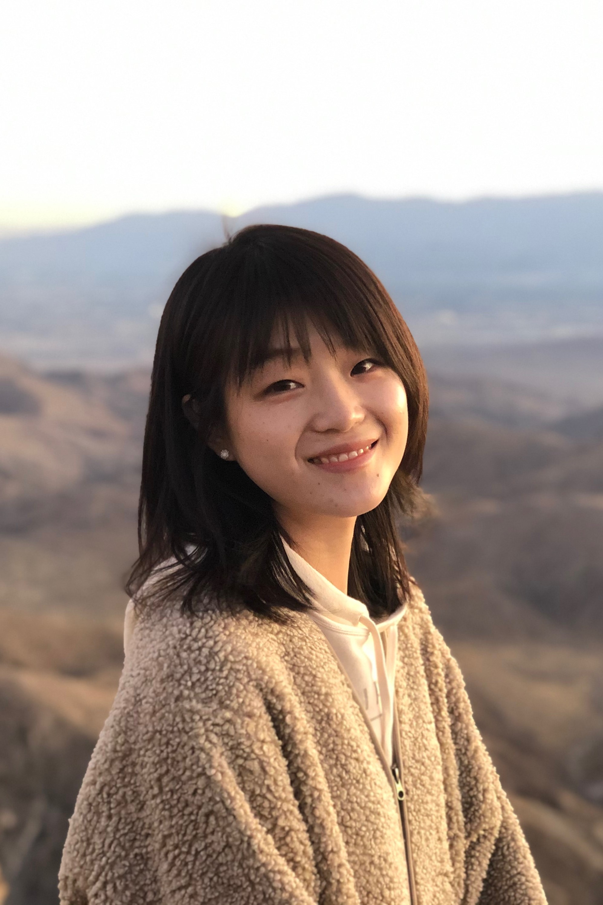

Shutong Li

Student
Department of Stomatology
Cheeloo College of Medicine
Shandong University
shutongli@mail.sdu.edu.cn
About
I am a graduate student pursuing a Master degree in stomatology at Shandong University. My advisor is Prof. Pishan Yang, and I am also closely collaborating with Prof. Shaohua Ge and Prof. Yundong Sun. My research interests are in tumor microenvironment and tissue regeneration engineering. I received my Bachelor degree in stomatology from Shandong University in 2018.
My recent projects:
- Inflammatory factors' contribution to tumor angiogenesis in oral cancer
- Correlation between Helicobacter pylori infection and OLP
Publications
-
Helicobacter pylori infection increases the incidence of erosive oral lichen planus and alters the oral microbiome composition.
Li S*, Zhang Y*, Li J, Li Y, Li H, Li W, Jia J, Ge S, Sun Y.
[under review]
-
Progranulin inhibits LPS-induced macrophage M1 polarization via NF-κB and MAPK pathways.
Liu L, Guo H, Song A, Huang J, Zhang Y, Jin S, Li S, Zhang L, Yang C, Yang P.
BMC Immunology, 2020
[journal]
-
Proanthocyanidins Promote Osteogenic Differentiation of Human Periodontal Ligament Fibroblasts in Inflammatory Environment Via Suppressing NF-κB Signal Pathway.
Huang J, Liu L, Jin S, Zhang Y, Zhang L, Li S, Song A, Yang P.
Inflammation, 2020
[journal]
-
Conditioned medium derived from FGF-2-modified GMSCs enhances migration and angiogenesis of human umbilical vein endothelial cells.
Jin S, Yang C, Huang J, Liu L, Zhang Y, Li S, Zhang L, Sun Q, Yang P.
Stem Cell Research & Therapy, 2020
[journal]
-
Prolyl hydroxylase inhibitor DMOG suppressed inflammatory cytokine production in human gingival fibroblasts stimulated with Fusobacterium nucleatum.
Shang L, Kang W, Li S, Ge S.
Clinical Oral Investigations, 2019
[journal]
Presentations
-
Periodontal-orthodontic Treatment in Patients with Aggressive Periodontitis: A Case Report.
The Workshop of Periodontology and Implantology at NTU-SDU, 2018 Aug.
Jinan, China
Awards
-
The Award of Skilled Residents
22nd China Stomatological Association (CSA) Annual Meeting & China Dental Show, 2020
-
Graduate Student of the Year
Shandong University, 2019
-
The First Prize Scholarship
Shandong University, 2019&2017
-
Postgraduate Scholarship
Shandong University, 2018
-
The Volunteer Service Outstanding Student
Shandong University, 2018
-
"Relationship and mechanism between Helicobacter pylori and oral lichen planus," $2,242
National College Student Innovation and Entrepreneurship Foundation, 2017
-
"Relationship and mechanism of periodontitis and oral squamous cell carcinoma," $2,242
National College Student Innovation and Entrepreneurship Foundation, 2016.
-
National Excellent Social Practice Project
"A study on women's awareness of maternal and infant oral care during the pregnancy"
China Oral Health Foundation, 2015
-
Outstanding Overseas Student with Scholarship
Shandong University, 2015
-
Social Practice Excellent Individual
Shandong University, 2014